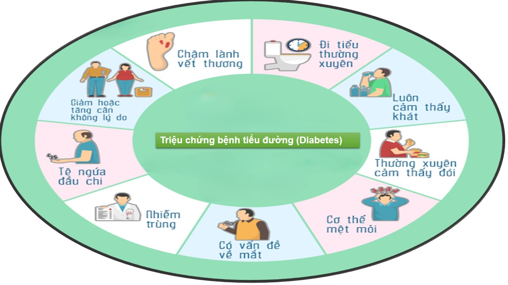
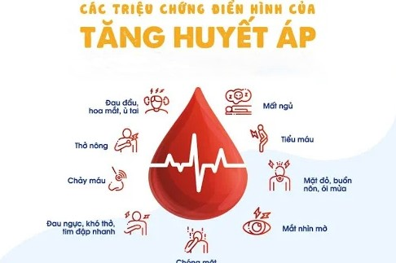
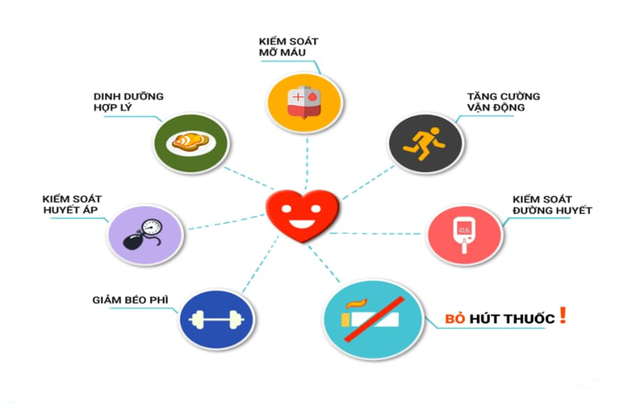
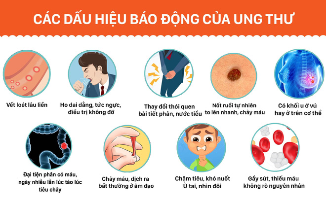
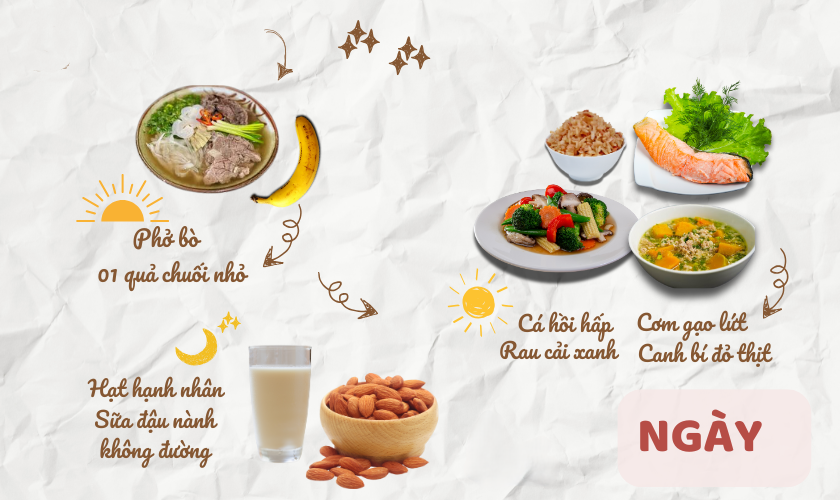
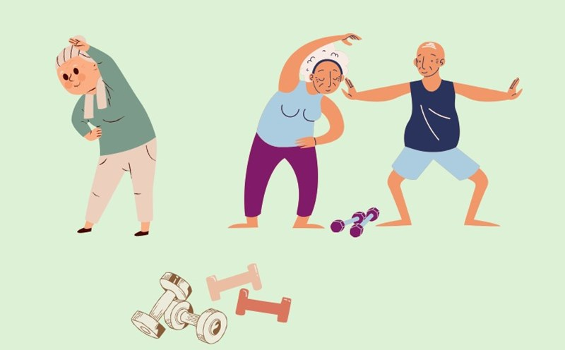

🔍 Chủ đề sức khỏe
Dưới đây là tóm tắt các bệnh phổ biến như tiểu đường, huyết áp cao, tim mạch và ung thư, bao gồm triệu chứng và phòng ngừa:
🩸 1. Bệnh tiểu đường (Diabetes)
Triệu chứng:
- Khát nước nhiều , tiểu nhiều.
- Mệt mỏi, sụt cân không rõ lý do vết thương lâu lành, mờ mắt.
Phòng ngừa:
- Hạn chế đường và tinh bột
- Tập thể dục đều đặn
- Duy trì cân nặng hợp lý
- Kiểm tra đường huyết định kỳ (đặc biệt nếu có người thân mắc bệnh)
🧠 2. Cao huyết áp (Hypertension)
Triệu chứng (thường không rõ ràng):
Phòng ngừa:
❤️ 3. Bệnh tim mạch (Heart Disease)
Triệu chứng:
Phòng ngừa:
🎗️ 4. Ung thư (Cancer)
Triệu chứng (tùy loại ung thư):
Phòng ngừa:
✅ Lưu ý chung: Nếu bạn có tuổi, tiền sử gia đình hoặc triệu chứng bất thường, nên khám định kỳ và tư vấn bác sĩ để phát hiện sớm các bệnh lý này.
🥗 Dinh dưỡng & Lối sống
Thực đơn lành mạnh, cách vận động phù hợp với người cao tuổi, và bài tập hàng ngày.
Dưới đây là thông tin chi tiết và dễ áp dụng cho người cao tuổi về thực đơn lành mạnh, cách vận động phù hợp, và bài tập hàng ngày để duy trì sức khỏe tốt, phòng bệnh và nâng cao chất lượng cuộc sống.
🥗 1. Thực đơn lành mạnh cho người cao tuổi.
 🍴 Nguyên tắc chung: Ăn đủ chất, đa dạng và hạn chế muối, đường, chất béo bão hòa.Tăng cường rau xanh, trái cây, thực phẩm giàu chất xơ. Uống đủ nước (1.5–2 lít/ngày), kể cả khi không thấy khát.
📅 Gợi ý thực đơn 1 ngày:
- Sáng Cháo yến mạch với sữa tách béo + 1 quả chuối nhỏ + trà xanh không đường.
- Phụ sáng 1 hũ sữa chua ít đường hoặc 1 nắm hạt (óc chó, hạnh nhân).
- Trưa Cơm gạo lứt + cá hấp hoặc gà luộc + rau luộc + canh mướp.
- Tối Cháo đậu xanh hoặc súp rau củ + trứng luộc.
- Trước khi ngủ Ly sữa ấm ít béo. ✅ Nên dùng dầu thực vật (dầu oliu, dầu đậu nành) thay vì mỡ động vật.
✅ Giảm muối, mắm, đường – tăng các gia vị tự nhiên như hành, gừng, nghệ.
🤸♀️ 2. Cách vận động phù hợp với người cao tuổi 
⚠️ Lưu ý trước khi tập: Khởi động kỹ (5–10 phút).Tập sau ăn 1 giờ, tránh lúc đói hay quá no. Mang giày mềm, có đệm lót tốt.
🕒 Thời lượng: 150 phút mỗi tuần (ví dụ: 30 phút/ngày, 5 ngày/tuần).
🏃♂️ Các hình thức vận động an toàn:
- Đi bộ nhanh: tốt cho tim mạch, xương khớp.
- Thái cực quyền / khí công / yoga nhẹ nhàng: giúp thư giãn, tăng thăng bằng.
- Đạp xe chậm, bơi lội, hoặc làm vườn.
- Tập tạ nhẹ (chai nước, tạ 1–2 kg) để duy trì cơ bắp.
💪 3. Bài tập hàng ngày cho người cao tuổi
🔄 Bài khởi động (5 phút mỗi buổi):
Xoay cổ, vai, cổ tay, hông, đầu gối. Gập duỗi tay – chân chậm rãi.
📌 Bài tập mẫu đơn giản tại nhà:
- 🧍♂️ Đứng lên – ngồi xuống từ ghế (10 lần). Giúp tăng sức mạnh chân và thăng bằng.
- 🚶♀️ Đi bộ tại chỗ (3–5 phút). Tăng nhịp tim, tuần hoàn máu.
- 🧘♀️ Tập thở sâu và giãn cơ:
- Hít vào 4 giây – giữ 2 giây – thở ra 6 giâ.y
- Gập người chạm ngón tay – giữ 10 giây.
- 🧴 Cầm chai nước làm tạ tay (2 set x 10 lần). Tập tay – vai nhẹ nhàng.
Luôn theo dõi huyết áp trước/sau tập nếu có bệnh nền, dừng lại ngay nếu đau ngực, chóng mặt, hụt hơi. Tập luyện nên có người thân hỗ trợ nếu cần
🧠 Sức khỏe tinh thần
Thông tin về stress, trầm cảm, cách tìm sự giúp đỡ và chăm sóc tâm lý tại địa phương.
Dưới đây là bản tổng hợp đầy đủ về các nguồn hỗ trợ tâm lý, ứng phó với stress & trầm cảm, cùng địa chỉ tư vấn chuyên nghiệp tại Fairfax, VA:
🧠 1. Nguồn hỗ trợ miễn phí & công cộng
Healthy Minds Fairfax 👉 Fairfax County.
- Cung cấp tư vấn ngắn hạn, hướng dẫn chuyên gia, danh bạ nhà cung cấp dịch vụ mới .
- Hotline 24/7: 703‑324‑5235 (TTY 711).
- Email: DFSHealthyMinds@fairfaxcounty.gov
- Địa chỉ: 12011 Government Center Pkwy, Pennino Bldg, Fairfax, VA 22035
- Hỗ trợ khủng hoảng, tiêm chủng tâm lý cho mọi nhóm tuổi
🆘 Fairfax‑Falls Church Community Services Board 👉 (CSB)
- Dịch vụ tư vấn, cấp thuốc, khủng hoảng 24/7.
- Hotline khẩn cấp: 703‑573‑5679 (cả lúc không khẩn cấp).
🆓 NAMI Northern Virginia 👉 NAMI
- Hỗ trợ miễn phí cho người trầm cảm, stress, và gia đình.
- Nhóm tự lực, giáo dục, advocacy cộng đồng.
💻 2. Dịch vụ tư vấn – trả phí / bảo hiểm
📍 Renewal of the Mind (Fairfax)
- Chuyên trị cá nhân, gia đình, EMDR (trauma), stress, trầm cảm .
- Chấp nhận bảo hiểm Aetna, Cigna, BCBS, United…
- Web.site: vapsychotherapy.com
📍 Fairfax Mental Health & Wellness Center 👉 FMHW
Bao gồm testing tâm lý, quản lý thuốc, telehealth .
🛠 3. Cách đối phó stress & trầm cảm
- Ghi nhật ký: Ghi lại cảm xúc hàng ngày, tìm nguyên nhân căng thẳng.
- Thực hành thể chất nhẹ: Đi bộ, thiền, yoga, giúp giảm căng thẳng.
- Tìm kết nối: Tham gia nhóm hỗ trợ, chia sẻ để giảm cảm giác cô lập.
📞 4. Danh bạ khẩn cấp
- Mục đích Số liên hệ: Nhóm khủng hoảng PRS CrisisLink 703‑527‑4077 hoặc TEXT “CONNECT” tới 85511
- CSB Fairfax khẩn cấp 703‑573‑5679
- Trung tâm khủng hoảng trẻ em 1‑844‑627‑4747
- Quốc gia (suicide hotline) 988 hoặc 1‑800‑273‑TALK
- Bệnh viện Dominion (emergency psych) 703‑536‑2000
- Bệnh viện Inova (ED psych) 703‑289‑7560
💬 Diễn đàn cộng đồng
Tham gia thảo luận và chia sẻ kinh nghiệm sức khỏe tại diễn đàn người Việt Fairfax.